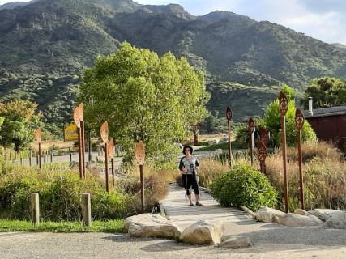
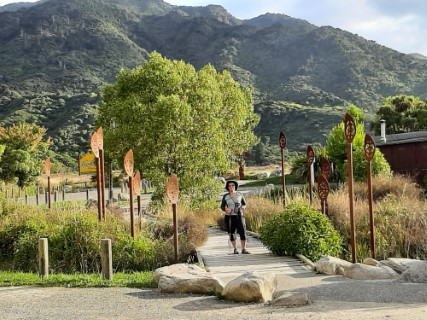

After completing the Lake Waikaremoana Track, we were keen to continue our walking adventure. We had planned to explore the Abel Tasman Coastal Track a few years ago but due to family circumstances, we were not able to do so. This time there was nothing stopping us. We crossed the Cook Strait on the Interislander ferry and drove from Picton to Marahau (Windy Garden in Maori), Beach Camp. The following morning I dropped off Fiona and our backpacks at the park entrance, parked the car at the camp car parking area and walked back to the park. On this trip, we started with slightly lighter packs; less food, less clothing, and no extra gas containers. We also quickly learned that due to the Covid travel restrictions many Aucklanders had cancelled their bookings on this walk.
 


Day 01
A relatively short day with plenty of opportunities to get wet and enjoy the sun. Our first swim was at the sandy Coquille Bay. Paradise. An empty beach all to ourselves. The next stopover was Apple Tree Bay. And the same situation. We swam, dried in the sun, and climbed up back to the main track. It was a similar situation at Akersten Bay and Observation Beach. Before descending to Observation Beach we used an old tramper's trick of hiding our backpacks in the bushes. This beach was the last one we visited before reaching the final destination, Anchorage Bay. We stayed for the night in Anchorage Hut, a very spacious, modern hut with multiple smaller bunk rooms. The bay itself can be a very busy place. It is possible to walk, kayak, or be dropped off by the water taxi there.
Day 02
The day started with a cup of tea and Tararua biscuits, followed by a short walk on golden sand along a beautiful sea shore. After leaving the beach our next stopover was Cleopatra's Pools, a series of natural rock pools at the base of the Torrent River. Cold, slippery, and very refreshing. A chance to wash off the sea salt from the previous swims. It was the highlight of the day. Before reaching Torrent Bay we climbed a steep side track leading to a waterfall. It was not our best idea. The day was very hot and the climb was very steep. We were not sure if it was a loop track or not so we did carry our packs, and the waterfall was somewhat disappointing. We had a short rest at Torrent Bay wharf. From there the track went up and down through the bush to Bark Bay where we stayed for the second night.

Day 03
Another exciting day. From Bark Bay, we followed the bushy, windy, uphill track that lead us to Tonga Quarry
Campsite. Between 1900 and 1910 granite rock was quarried here. The Nelson Cathedral steps were
extracted from here. After yet another swim we followed the track to Onetahuti Beach before reaching Awaroa
Lodge. We were hoping to stop at the lodge for a coffee or chai latte but the place looked jam-packed.
Instead, we walked down, to see the piece of beach we purchased a few years ago when crowd funding allowed
this beach to be retained as a public treasure. It's a gorgeous place. Someone described it as the
pristine paradise of Awaroa.
Awaroa Hut is located not that far from the southern end of the beach
itself. The secret of getting to the hut lies in the timing. If you time your walk correctly and arrive at
the beach at low tide you will save yourself lots of uphill walking. In our case, it was more good luck than
good management, but we did not have to go back on the uphill track. We discovered on arrival at the beach
that we would have time to get across after a quick swim at 'our' beautiful beach. A pleasant
stroll along the water and across the small estuary, linked to the Awaroa Inlet took us right to the
doorstep of the hut. We had plenty of time to enjoy the sun and cheeky weka on the deck but had to cover up
to protect against the sandflies.
Day 04
Probably the longest and most tiring day on the track. After breakfast, we were all waiting for the tide to go out before we could cross the Awaroa Inlet. An arrival of early walkers from the other side of the inlet was a good indicator that it was safe to start our crossing. After less than 30 minutes of avoiding small pools of water, we left the inlet and went on to discover the views of Waiharakeke Bay and have a swim at Goat Bay. From here it was another uphill towards Totaranui Beach. We walked through the Totaranui Camping Area. The place was full of tents, caravans, and motor homes and had a toilet block. As we were not sure about the tides so we took the longer, inland route towards Anapai Bay. By the time we arrived at Anapai Bay we were hot, tired and in need of a long swim. The next bay was Anatakapau Bay. From here we went over the hill towards the Whariwharangi Hut, leaving Separation Point on our left. The Whariwharangi Hut must be the oldest hut on NZ Great Walks. It is a historic farm homestead built in 1898 and located just a couple of minutes inland from Whariwharangi Bay. As only three walking couples stayed the night in the hut we all had our own rooms. There was also a cold water shower in the toilet block. A luxury indeed. The hut was inland from the beach so was free of sandflies but you needed to keep the door shut so that the cheeky weka did not come in and steal items from your backpack.

Day 05
The plan for the day was to visit Separation Point, walk back to Totaranui Bay, and catch the water taxi back to Marahau. It was an easy and relaxing day. An hour's walk through the bush from Whariwharangi Hut lies Separation Point / Te Matau, the northern end of Abel Tasman National Park that marks the geographic boundary between Golden Bay and Tasman Bay. We had the pleasure to spot a colony of seals and ....a colony of artificial gannets, there to attract any real gannets that might fly past. After a quick descent fromTe Matau we reached Mutton Cove and retraced our steps back to Totaranui Bay. Here we had plenty of time to lie on the sand and swim in the blue sea while waiting for the water taxi. It was nice to view from the sea the coast that we had walked in the previous few days.